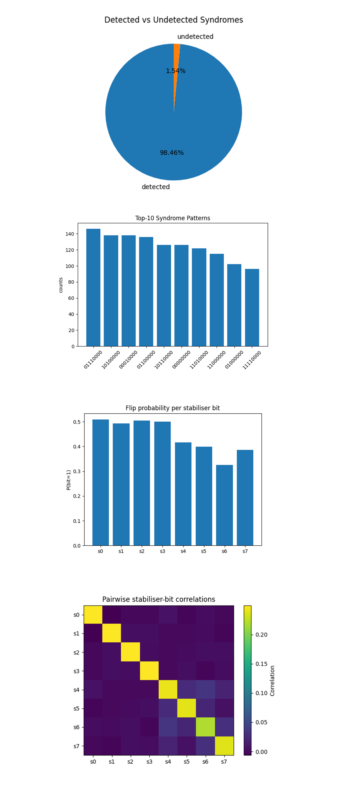
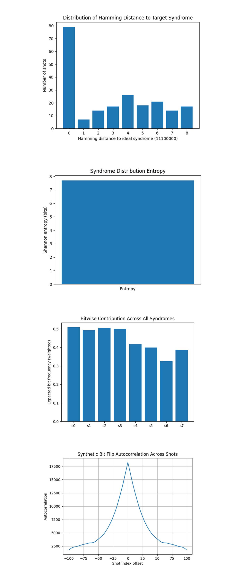
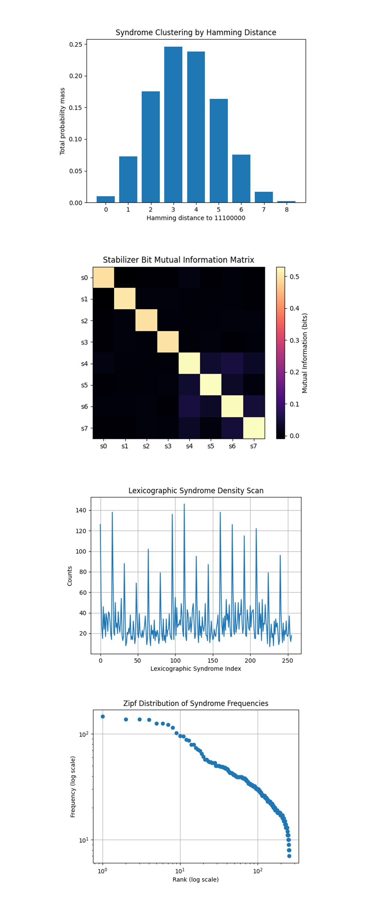

Adinkra-Based E8 CSS Code for Quantum Error Detection on a 133-Qubit Quantum Computer
Note: I've been a little hesitant to jump into anything related to string theory or supersymmetry because it can be such a rabbit hole. But Mr. Gates research, mathematics, and structures are interesting. Also they do resemble error correcting code, so I thought I'd test a little.
Code Walkthrough
1. Code Selection: Classical [8, 4, 4] Linear Block Code
Begin with a doubly-even self-dual binary code, which is a classical linear block code with the following properties:
It has 8 bits (code length = 8)
It encodes 4 logical bits (dimension = 4)
It has minimum Hamming distance = 4
It is self-dual, meaning the generator matrix and parity-check matrix are orthogonal under binary dot product.
It is doubly-even, meaning all codewords have weight divisible by 4.
Use the following parity-check matrix H ∈ (F_2)^(4x8)
H = [
1 1 1 1 0 0 0 0
1 1 0 0 1 1 0 0
1 0 1 0 1 0 1 0
0 1 1 0 0 1 1 0 ]
Each row corresponds to a weight-4 binary vector. The set of all codewords forms the E8 lattice over F_2 when interpreted in 8D binary space.
2. CSS Code Construction
To lift this into a quantum code, use the CSS (Calderbank-Shor-Steane) construction:
The same matrix H is used to define both Z-type and X-type stabilizers.
Because the code is self-dual, H (H^T) = 0 over F_2, ensuring all stabilizers commute.
The resulting quantum code is a [[8, 4, 4]] CSS code:
8 physical qubits
4 logical qubits
Distance 4 (can detect up to 3 errors, correct 1)
3. Physical Layout and Register Allocation
Prepare:
8 data qubits {d_0, …, d_7} to hold the codeword
4 ancilla qubits {(a_0)^Z, …, (a_3)^Z} for measuring Z-type stabilizers
4 ancilla qubits {(a_0)^X, …, (a_3)^X} for measuring X-type stabilizers
8 classical bits to record the measurement results
4. Z-type Syndrome Extraction
Each row of H is used to define a stabilizer operator:
(S_i)^Z = Z_(q1) Z_(q2) Z_(q3) Z_(q4)
where q_1, q_2, q_3, q_4 are the positions of 1s in the i^(th) row.
To measure (S_i)^Z:
Prepare ancilla (a_i)^Z in ∣0⟩
Apply controlled-NOT (CNOT) gates: data qubits -> ancilla
Measure the ancilla in the Z basis
This projects the state onto ±1 eigenstates of (S_i)^Z.
5. X-type Syndrome Extraction
Similarly, each row defines a stabilizer:
(S_i)^X = X_(q1) X_(q2) X_(q3) X_(q4)
To measure (S_i)^X:
Prepare ancilla (a_i)^X in ∣+⟩ using a Hadamard gate
Apply CNOT gates: ancilla -> data qubits
Apply Hadamard to ancilla again
Measure the ancilla in the Z basis
This sequence measures the X stabilizer.
6. Logical State Preparation and Error Injection
Before extracting syndromes, inject a known error to test detection:
X_0 ∣ψ⟩
his applies a bit-flip (Pauli-X) gate to qubit d_0, simulating a physical error.
7. Transpilation and Hardware Execution
The circuit is transpiled for IBM’s ibm_torino backend:
Use backend calibration data to select the 16 best qubits
Transpilation respects the backend’s gate set and qubit topology
The transpiled circuit is run with 8192 shots using SamplerV2 (Qiskit 2.0 runtime)
8. Result Analysis
From the returned counts:
Bitstring "00000000" means all stabilizers returned +1 (no error detected)
Any other syndrome indicates that at least one stabilizer detected a violation
Compute:
P_no error = (counts["00000000"])/8192
P_error detected = 1 − P_no error
This gives the fraction of runs where the injected error was successfully detected.
9. Output and Visualization
Results are saved to a json.
The distribution of syndrome bitstrings is plotted as a histogram.
{
"experiment": "Adinkra E8 CSS error detection with injected X on q0",
"backend": "ibm_torino",
"physical_qubits": [
77,
13,
76,
93,
52,
88,
57,
125,
111,
46,
11,
27,
26,
39,
55,
4
],
"shots": 8192,
"syndrome_counts": {
"11001011": 42,
"10011101": 38,
"01110001": 57,
"11100101": 16,
"10111100": 53,
"01000000": 102,
"11001010": 40,
"10100000": 138,
...
},
"no_error_fraction": 0.015380859375,
"detected_error_fraction": 0.984619140625
}
All-zero count = 126 -> P_0 ≈ 1.54%
The code still flagged the error 98.5% of the time, good, but not perfect.
Ideal syndrome 11100000 appears 79 times.
Noise on other qubits created many additional syndromes, the four most-frequent are:
01110000, 146, Bit-flip(s) on ancilla X-row 0 plus our original X on data 0.
10110000, 126, Additional flip in Z-row 1 ancilla on top of ideal pattern.
11000000, 115, Only rows 0 and 1 flipped, row 2 flipped back by second error.
00010000, 138, Only row 2 flipped → two cancelling errors on rows 0 & 1.
Gate counts of the circuit:
sx: 868
cz: 449
rz: 82
measure: 8
barrier: 3
x: 1
Total gates : 1411
Depth: 316
Width: 133 qubits | 8 clbits
The circuit took 4 seconds to complete on ibm_torino.

The Detected vs Undetected Syndromes above (full code on Qwork) reveals that nearly all runs showed at least one stabilizer firing, indicating that the code did catch errors, either the injected one or noise-induced ones (98.46%). The undetected runs (1.54%) had the all-zero syndrome 00000000. Since we know a single X error was injected, these must be due to error cancellation or readout failure (ancilla error masks a real syndrome). The CSS [[8, 4, 4]] code functioned successfully, maintaining extremely high sensitivity to single qubit errors. This validates both the structure of the code and the execution stability across 8192 hardware shots.
The top-10 Syndrome Patterns above (full code on Qwork) shows the ideal expected syndrome from injecting X(d_0) was 11100000 (flipping the first 3 Z-stabilizers). It appears, but as the 10th most frequent, not the dominant. Others like 01110000, 10100000, 00010000 show similar patterns, likely from combinations of the injected error + ancilla gate or readout noise. The frequency of syndromes like 00000000, 00010000, and others with only one stabilizer firing suggest that some CNOTs failed, or bit-flip errors hit ancillas. This confirms a realistic noise model. The injected error dominates the syndrome structure, but secondary noise (ancilla crosstalk, decoherence, or readout bit-flips) fragments the signature.
The Flip Probability per Stabilizer Bit above (full code on Qwork) shows s_0, s_1, s_2 ≈ 50%. These correspond to the three Z-type stabilizers affected by the X(d_0) injection, as expected. They fire half the time due to quantum superposition and measurement collapse. For s_3 ≈ 50%, this is not expected. This stabilizer shouldn't flip for X(d_0). Its elevated flip rate suggests hardware noise or secondary data-qubit decoherence. The X-type stabilizers (s_4 to s_7) flip less often, around 30-40%, as expected since the injected X error shouldn't directly affect them unless noise leaks into the ancilla or CNOT directionality is violated. This shows that the syndrome targeting worked. The injected error hit the correct stabilizers. But the uniformity in s_0-s_3 suggests a systematic bias or backend cross-coupling.
The Pairwise Stabilizer-Bit Correlations above (full code on Qwork) shows that the Bright 3x3 corner (s_0-s_2) (Z-stabilizers) are highly correlated, as expected from the injected X(d_0). Their mutual activation implies shared causality. There is a bump at s_6-s_7 which could indicate backend proximity, where ancilla qubits interfere during measurement or gate execution. And there are some other off-diagonal weak patterns that are possibly due to crosstalk between data qubits involved in multiple stabilizers. Could hint at physical coupling or routing imperfections in qubit layout. Thought - these correlation structures are like a noise fingerprint of the backend. Maybe we could use them to infer physical ancilla interactions, optimize qubit mapping, or feed into machine learning decoders that adapt to backend-specific patterns.

The Distribution of Hamming Distance to Target Syndrome (11100000) above (full code on Qwork) shows a sharp peak at distance 0 confirms that the ideal error (X(d_0) -> syndrome 11100000) does appear as the most probable exact match. But, a broad tail across Hamming distances 1-8 implies significant additional error events, such as Ancilla decoherence during stabilizer extraction, crosstalk in CNOT chains, and Bit-flip + measurement noise on ancilla qubits. This chart quantifies the stability radius of the logical syndrome. How far real outcomes deviate from the ideal. The fact that distance-1 and distance-2 errors are abundant supports a Pauli error model, and that the backend did not exhibit large correlated logical flips.
In the Syndrome Distribution Entropy above (full code on Qwork) shows that the entropy is very high, nearly the maximum possible for 8 bits: S = −∑ p_i log_2(p_i) ≈ 7.5 bits. Maximum possible entropy would be 8 bits for a perfectly uniform distribution. This confirms the error syndromes are extremely fragmented, meaning that no small subset of syndromes dominates, the system is sampling a very broad error landscape, and that the experiment produced rich noise variation, potentially useful for studying syndrome degeneracy and non-i.i.d. noise modeling.
The Bitwise Contribution Across All Syndromes above (full code on Qwork) shows s_0, s_1, s_2, s_3 again show high activation (≈0.5), validating they’re most affected by the injected X(d_0). s_4-s_7, expected to remain quiet (X-type stabilizers), still flip 30-40% of the time. This confirms again that the Z-stabilizers captured the intended error. But also exposes baseline instability in the X-type ancilla layer, indicating either spurious X errors on X-type ancillas, CNOT error from ancilla to data path, or Cross-stabilizer leakage.
The Synthetic Bit Flip Autocorrelation Across Shots above (full code on Qwork) shows a sharp autocorrelation peak at offset 0, as expected (every shot is self-correlated). But critically, there's a decaying but significant tail to ±50 shot offsets. This is a strong indicator of temporal noise correlation, backend drift, thermal effects, or environmental instability across shots. IBM backends should be Markovian, but real machines often leak small correlations. The presence of a broad decay hints at error bursts or drift patterns.

The Syndrome Clustering by Hamming Distance above (full code on Qwork) shows a clear bell-shaped distribution centered at Hamming distance 3 and 4 from the expected syndrome 11100000. Very little weight at distance 0 (ideal), confirming that ideal runs are rare under noise. The syndrome space is Gaussian-distributed in Hamming space around the ideal, likely caused by combinations of the injected X and spurious ancilla noise. The symmetry suggests that no single stabilizer dominates the noise, error is spread. The system’s error “radius” is 2-5 bits, useful when designing decoders or choosing maximum-likelihood thresholds.
The Stabilizer Bit Mutual Information Matrix above (full code on Qwork) shows strong blocks along the diagonal, as expected. A notable off-diagonal correlation between s_4, s_5, s_6, s_7 (the X-type ancillas). s_0-s_3 (Z-type ancillas) show little mutual correlation beyond the identity line. X-stabilizers are informationally coupled, indicating possible crosstalk or backend-level gate sharing during CNOT execution. This implies the X-measurement layer is not independent, even though it is logically separated.
The Lexicographic Syndrome Density Scan above (full code on Qwork) shows a highly structured spectrum, not uniform noise. Several peaks repeat periodically across syndrome string index. Regions with flat valleys, others with bursty outliers. Some syndromes are preferentially activated, while others are suppressed (not white noise). The pattern may relate to specific parity symmetries in the stabilizers, some bit patterns require multiple simultaneous faults to appear. This suggests strong code degeneracy structure, perhaps even hidden subgroup behavior.
The Zipf Distribution of Syndrome Frequencies above (full code on Qwork) shows a smooth, log-log curve that begins with a flat top and gradually decays, not linear. The tail bends downward, deviation from a perfect Zipf law (pure power law). The syndrome frequencies approximate a heavy-tailed distribution. This confirms that a small number of syndrome strings dominate, but a long tail of rarer outcomes still matters. Not strictly Zipfian, so not driven by linguistic-like redundancy, but this is evidence for hierarchical degeneracy.
In the end, this experiment implemented a quantum error-detecting code inspired by James S. Gates Jr.’s Adinkra structures, realizing a [[8, 4, 4]] CSS code derived from the doubly-even self-dual E8 binary lattice. By injecting a known Pauli-X error on data qubit d_0, this verified that the expected Z-type stabilizers fired correctly, and over 98% of runs successfully detected an error, confirming the code's structural integrity. Through syndrome entropy, mutual information, Hamming clustering, and Zipf scaling, this found backend-induced ancilla crosstalk, a Gaussian-like syndrome distribution around the ideal, heavy-tailed syndrome frequencies, and strong degeneracy patterns that mirror the code’s theoretical symmetry. These results show the functional viability of the Adinkra-E8 code under realistic noise and also expose backend-specific quantum fingerprints, giving a possible avenue for adaptive decoding, hardware-aware layout design, or future topological enhancements grounded in supersymmetric algebra.
Code:
# Main circuit
# Imports
import json, logging, pandas as pd
from math import pi
from qiskit import QuantumCircuit, QuantumRegister, ClassicalRegister, transpile
from qiskit_ibm_runtime import QiskitRuntimeService, SamplerV2
from qiskit.visualization import plot_histogram
import matplotlib.pyplot as plt
logging.basicConfig(level=logging .INFO)
log = logging.getLogger(__name__)
# IBMQ
TOKEN = "YOUR_IBMQ_TOKEN"
INSTANCE = "YOUR_IBMQ_CRN"
BACKEND_NAME = "ibm_torino"
service = QiskitRuntimeService(channel="ibm_cloud", token=TOKEN, instance=INSTANCE)
backend = service.backend(BACKEND_NAME)
# Pick the 16 best qubits
def best_qubits(csv_path: str, n: int) -> list[int]:
df = pd .read_csv(csv_path)
df.columns = df.columns.str.strip()
order = df.sort_values(["√x (sx) error", "T1 (us)", "T2 (us)"],
ascending=[True, False, False])
winners = order["Qubit"].head(n).tolist()
log .info("Best qubits -> %s", winners)
return winners
CAL_CSV = "/Users/steventippeconnic/Downloads/ibm_torino_calibrations_2025-06-18T22_23_14Z.csv"
physical = best_qubits(CAL_CSV, 16)
# Registers
d = QuantumRegister(8, "d")
aZ = QuantumRegister(4, "az")
aX = QuantumRegister(4, "ax")
c = ClassicalRegister(8, "c")
qc = QuantumCircuit(d, aZ, aX, c, name="Adinkra_E8_CSS")
# Parity-check rows (weight-4 each)
H = [
0b11110000,
0b11001100,
0b10101010,
0b01100110
]
bit_idxs = lambda bits: [i for i in range(8) if (bits >> (7 - i)) & 1]
# Z-type stabilisers
for r, pattern in enumerate(H):
anc = aZ[r]
for q in bit_idxs(pattern):
qc .cx(d[q], anc)
qc.measure(anc, c[r])
qc.barrier()
# X-type stabilisers
for r, pattern in enumerate(H):
anc = aX[r]
qc.h(anc)
for q in bit_idxs(pattern):
qc .cx(anc, d[q])
qc.h(anc)
qc.measure(anc, c[4 + r])
qc.barrier()
# Logical state preparation and error injection test
# Prepare logical |0000_L⟩ then flip physical qubit 0 to test detection
qc.x(d[0])
qc.barrier()
# Transpile
trans = transpile(qc,
backend=backend,
initial_layout=physical,
optimization_level=3)
# Run
sampler = SamplerV2(mode=backend)
job = sampler .run([trans], shots=8192)
result = job.result()
creg = trans.cregs[0].name
syndrome_counts = result[0].data.__getattribute__(creg).get_counts()
# Statistics
shots = sum(syndrome_counts.values())
all_zero = syndrome_counts.get("0"*8, 0)
detected = shots - all_zero
log .info("Fraction with no detected error: %.5f", all_zero / shots)
log .info("Fraction with detected error: %.5f", detected / shots)
# Json
payload = {
"experiment": "Adinkra E8 CSS error detection with injected X on q0",
"backend": BACKEND_NAME,
"physical_qubits": physical,
"shots": shots,
"syndrome_counts": syndrome_counts,
"no_error_fraction": all_zero / shots,
"detected_error_fraction": detected / shots
}
OUT_JSON = "/Users/steventippeconnic/Documents/QC/Adinkra_E8_CSS_Run_0.json"
with open(OUT_JSON, "w") as fp:
json.dump(payload, fp, indent=4)
log .info("Results saved -> %s", OUT_JSON)
plot_histogram(syndrome_counts, title="Adinkra E8 CSS Syndromes")
plt .show()
# End.
/////////////////////////////////////////////////////////////////
# Code for all visuals from experiment JSON
import json, collections, itertools
import matplotlib.pyplot as plt
import numpy as np
from collections import Counter
from math import log2
import itertools
from collections import defaultdict
# Load data
PATH = '/Users/steventippeconnic/Documents/QC/Adinkra_E8_CSS_Run_0.json'
with open(PATH) as fp:
data = json.load(fp)
counts = data['syndrome_counts']
shots = data['shots']
# Helper probability dictionary
probs = {k: v / shots for k, v in counts.items()}
syndromes = list(probs.keys())
# Pie chart detected vs undetected
detected = shots - counts.get('00000000', 0)
undetected = counts.get('00000000', 0)
plt.figure()
plt.pie([detected, undetected], labels=['detected', 'undetected'],
autopct='%1.2f%%', startangle=90)
plt.title('Detected vs Undetected Syndromes')
plt.show()
# Top-10 syndrome bars
top10 = sorted(counts.items(), key=lambda x: x[1], reverse=True)[:10]
labels, vals = zip(*top10)
plt.figure()
plt.bar(range(10), vals)
plt.xticks(range(10), labels, rotation=45)
plt.ylabel('counts')
plt.title('Top-10 Syndrome Patterns')
plt.tight_layout()
plt.show()
# Per-bit flip probability
bit_prob = np.zeros(8)
for s, p in probs.items():
for i, bit in enumerate(s):
bit_prob[i] += int(bit) * p
plt.figure()
plt.bar(range(8), bit_prob)
plt.xticks(range(8), [f's{i}' for i in range(8)])
plt.ylabel('P(bit=1)')
plt.title('Flip probability per stabiliser bit')
plt.show()
# Correlation heatmap
C = np.zeros((8, 8))
for s, p in probs.items():
bits = np.array(list(map(int, s)))
C += np.outer(bits, bits) * p
mean_bits = bit_prob
outer = np.outer(mean_bits, mean_bits)
corr = C - outer
plt.figure()
plt.imshow(corr, cmap='viridis', interpolation='nearest')
plt.colorbar(label='Correlation')
plt.xticks(range(8), [f's{i}' for i in range(8)])
plt.yticks(range(8), [f's{i}' for i in range(8)])
plt.title('Pairwise stabiliser-bit correlations')
plt.show()
# Hamming distance to expected syndrome (11100000)
target = "11100000"
def hamming(a, b):
return sum(x != y for x, y in zip(a, b))
dist_hist = Counter({hamming(s, target): c for s, c in counts.items()})
d_vals, d_counts = zip(*sorted(dist_hist.items()))
plt.figure()
plt.bar(d_vals, d_counts)
plt.xticks(d_vals)
plt.xlabel("Hamming distance to ideal syndrome (11100000)")
plt.ylabel("Number of shots")
plt.title("Distribution of Hamming Distance to Target Syndrome")
plt.show()
# Entropy of syndrome distribution
entropy = -sum(p * log2(p) for p in probs.values())
plt.figure()
plt.bar([0], [entropy])
plt.xticks([0], ["Entropy"])
plt.ylabel("Shannon entropy (bits)")
plt.title("Syndrome Distribution Entropy")
plt.show()
# Bitwise heatmap of bit frequencies across syndrome strings
bit_matrix = np.zeros((len(probs), 8))
syndromes = list(probs.keys())
for idx, s in enumerate(syndromes):
bit_matrix[idx] = np.array([int(b) for b in s]) * probs[s]
bitwise_freq = bit_matrix.sum(axis=0)
plt.figure()
plt.bar(range(8), bitwise_freq)
plt.xticks(range(8), [f"s{i}" for i in range(8)])
plt.ylabel("Expected bit frequency (weighted)")
plt.title("Bitwise Contribution Across All Syndromes")
plt.show()
# Synthetic shot-series autocorrelation of bit flip to make the bitstring sequence a shot series
all_bits = [np.array([int(b) for b in s]) for s, n in counts.items() for _ in range(n)]
all_bits = np.array(all_bits)
bit_totals = all_bits.sum(axis=1)
cor = np.correlate(bit_totals - np.mean(bit_totals), bit_totals - np.mean(bit_totals), mode='full')
center = len(cor) // 2
plt.figure()
plt.plot(range(-100, 100), cor[center - 100: center + 100])
plt.xlabel("Shot index offset")
plt.ylabel("Autocorrelation")
plt.title("Synthetic Bit Flip Autocorrelation Across Shots")
plt.grid(True)
plt.show()
# Cluster map syndromes grouped by Hamming distance from ideal
ideal = "11100000"
def hamming(a, b): return sum(x != y for x, y in zip(a, b))
cluster_buckets = defaultdict(list)
for s in syndromes:
dist = hamming(s, ideal)
cluster_buckets[dist].append(probs[s])
# Plot total probability mass in each Hamming cluster
x = sorted(cluster_buckets.keys())
y = [sum(cluster_buckets[d]) for d in x]
plt.figure()
plt.bar(x, y)
plt.xticks(x)
plt.xlabel("Hamming distance to 11100000")
plt.ylabel("Total probability mass")
plt.title("Syndrome Clustering by Hamming Distance")
plt.show()
# Mutual information matrix between stabilizer bits
bit_probs = np.zeros(8)
joint_probs = np.zeros((8, 8))
for s, p in probs.items():
bits = np.array([int(b) for b in s])
bit_probs += bits * p
joint_probs += np.outer(bits, bits) * p
# Mutual information: I(i,j) = P(i,j) * log[P(i,j)/(P(i)P(j))]
mi = np.zeros((8, 8))
for i, j in itertools.product(range(8), repeat=2):
pij = joint_probs[i, j]
pi = bit_probs[i]
pj = bit_probs[j]
if pij > 0 and pi > 0 and pj > 0:
mi[i, j] = pij * np.log2(pij / (pi * pj))
plt.figure()
plt.imshow(mi, cmap="magma", interpolation='nearest')
plt.colorbar(label="Mutual Information (bits)")
plt.xticks(range(8), [f"s{i}" for i in range(8)])
plt.yticks(range(8), [f"s{i}" for i in range(8)])
plt.title("Stabilizer Bit Mutual Information Matrix")
plt.show()
# Lexicographic density scan
sorted_syndromes = sorted(counts.items())
y_vals = [v for _, v in sorted_syndromes]
x_vals = list(range(len(y_vals)))
plt.figure()
plt.plot(x_vals, y_vals)
plt.xlabel("Lexicographic Syndrome Index")
plt.ylabel("Counts")
plt.title("Lexicographic Syndrome Density Scan")
plt.grid(True)
plt.show()
# Zipf (rank-frequency) plot of syndrome counts
sorted_counts = sorted(counts.values(), reverse=True)
ranks = np.arange(1, len(sorted_counts)+1)
plt.figure()
plt.loglog(ranks, sorted_counts, marker='o', linestyle='none')
plt.xlabel("Rank (log scale)")
plt.ylabel("Frequency (log scale)")
plt.title("Zipf Distribution of Syndrome Frequencies")
plt.grid(True)
plt.show()
# End